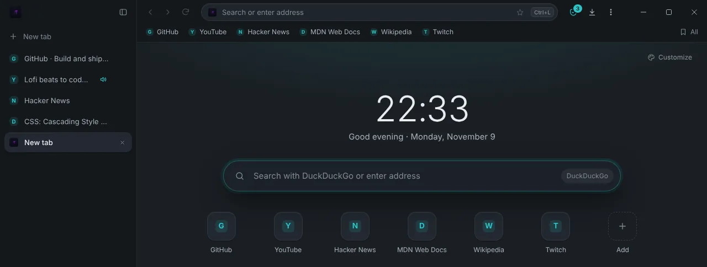
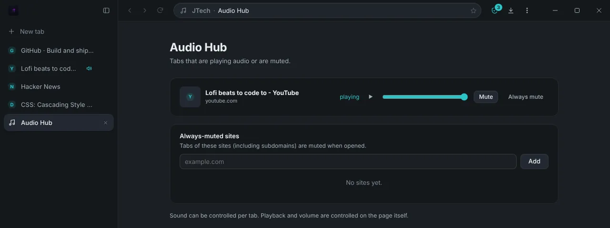
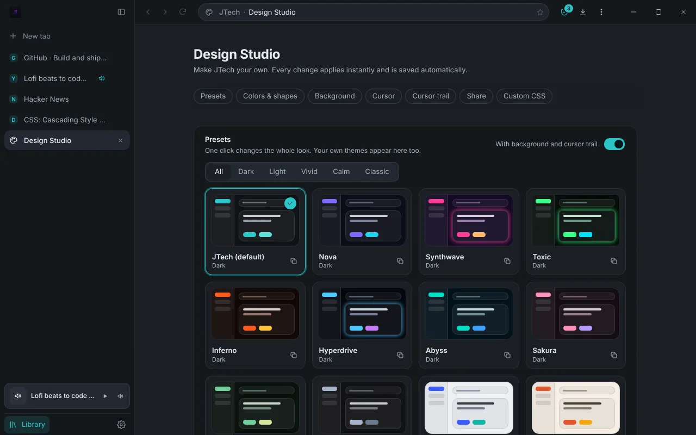

A focused browser for Windows, with tabs in a sidebar and ad blocking built in.
JTech Browser is free and open source. It is built with Rust on Microsoft Edge WebView2, so websites render with the same engine as Edge, and it keeps itself up to date.
Version 0.x: new and still changing. Interface in English and German.

The start page with the tab sidebar. Preview of the current interface with sample content.
Made for long sessions with many tabs
The interface stays out of the way until you need it, and most of it can be reached without leaving the keyboard.
Tabs that stay in order
Tabs run down a resizable sidebar instead of across the top. Pin the ones you always need, gather related ones in groups and drag them where you want. Idle tabs can sleep to free memory, and your session comes back after a restart.
Two pages at once
Split view shows two tabs side by side or stacked, with a divider you can move. Shift + click a link to open it in a Peek window over the current page, and close it again when you are done.
Quick with keyboard and mouse
Ctrl + K opens the command palette for tabs, pages and actions, and every shortcut can be reassigned. Hold the middle mouse button or press Alt + Q for a radial menu with four to eight commands of your choice.
Sound and resources under control
The Audio Hub lists every tab that plays sound, with play and pause, volume per tab and sites that always start muted. Resource limits keep background tabs lean, with optional caps for total memory and CPU.
A mini player in the sidebar
Music in a background tab shows up at the bottom of the sidebar with its title and controls, so you can pause or mute it without searching for the tab.

Ad and tracker blocking, with its limits stated
Blocking is part of the browser, not an add-on. It removes a lot of clutter and tracking, but not everything, and we would rather say so up front.
Built-in blocker
Every request a page makes is checked in Rust with Brave's open-source adblock-rust engine. EasyList and EasyPrivacy are on by default; the uBlock filters, Peter Lowe's list and Fanboy's Annoyance list can be added. Lists update automatically, and you can allow any site you want to support.
What it does not do
It does not block every ad and does not match the coverage of mature blocker extensions.
Scriptlets and procedural cosmetic filters are not executed, so some rules in the lists have no effect.
Page elements that appear after loading are not re-checked, so an ad can briefly flash.
WebSocket traffic and some service worker requests cannot be filtered.
Extensions are reviewed and shipped inside the browser, and they update together with it. Switch them on in the JTech Market, or pause one for a single website. No extension code is downloaded from the internet.
Twitch ad blockerbest effort
Tries to keep ads out of Twitch streams without routing your traffic through a third-party proxy. Twitch changes its player often, so it can stop working until an update arrives.
YouTube ad blockerbest effort
Removes ads from YouTube pages and the video player. YouTube also changes frequently, so parts of it can lag behind until the extension is updated.

Make it look like yours
The Design Studio changes the whole look in one click with a preset, or step by step. Every change applies right away.
A theme gallery with dark, light, vivid and calm presets
Your own colours and shapes, or custom CSS
Animated backgrounds, custom cursors and cursor trails
Duplicate, import and export themes to share them
A start page with adjustable background, clock, greeting and quick links
Open source, and no tracking of its own
You can read every line of JTech Browser. Here is what it keeps to itself and what it does connect to.
MIT licensed
The complete source code is on GitHub. Read it, build it yourself, change it or report a problem.
No telemetry, no account
The browser sends no usage statistics. History, bookmarks and settings are stored in a local database on your PC.
Privacy tools included
Block statistics, cookies per site, clearing browsing data, clearing cookies and cache on exit, and site permissions for camera, microphone, location and notifications.
What does go out
Apart from the websites you open, the browser makes these requests:
Search suggestions
While you type in the address bar, the text is sent to your chosen search engine to fetch suggestions. Web addresses are never sent. You can turn this off in Settings.
Update check
The browser asks GitHub for the latest release and verifies an update's signature before installing it. The check can be turned off.
Filter lists
Blocklists are downloaded from their publishers, for example easylist.to, every few days.
JTech Market
The market reads its list of extensions from the project's GitHub repository.
Download JTech Browser
One installer for 64-bit Windows. After that, the browser updates itself.
Microsoft Edge WebView2 Runtime. Windows 11 already includes it; on Windows 10 it is usually present and otherwise set up by the installer.
A warning on first start is expectedThe installer is not yet signed with a Windows publisher certificate, so Microsoft SmartScreen may warn you. Choose "More info" and then "Run anyway". This is separate from the update signature the browser checks before installing its own updates.
Early softwareJTech Browser is at version 0.x. Expect rough edges and changes between releases. If something breaks, please open an issue.